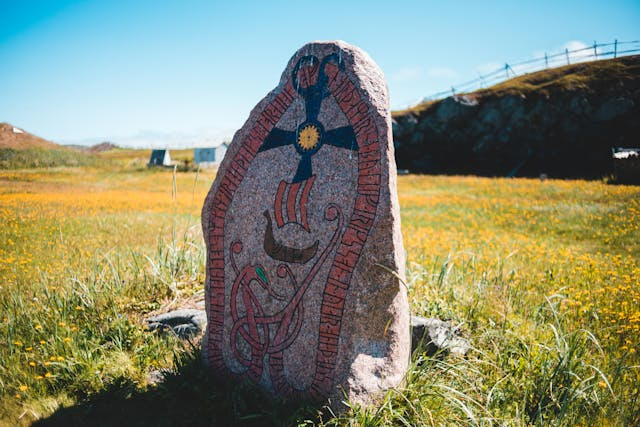
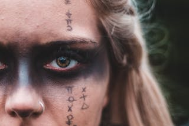

Las runas vikingas son más que simples caracteres tallados en piedra. Son símbolos ancestrales que encapsulan la sabiduría y el misterio de los antiguos pueblos nórdicos. Cada runa tiene su propio significado y poder, vinculando al individuo con los ciclos de la naturaleza y los misterios del cosmos. Talladas en madera, piedra o metal, las runas servían como un medio de comunicación con los dioses y como herramienta de adivinación. Los vikingos creían que al lanzar las runas y leer su mensaje, podían obtener orientación en momentos de indecisión o dificultad. El alfabeto rúnico consta de 24 caracteres, cada uno con su propio nombre y significado.
Dentro de las Runas más comunes podemos encotrar las siguientes:
Desde la runa Fehu, que representa riqueza y prosperidad, hasta la poderosa Thurisaz, que simboliza la fuerza y la protección, cada una ofrece una ventana al mundo espiritual vikingo. Aunque las runas vikingas se originaron en tiempos antiguos, su influencia perdura hasta el día de hoy. Siguen siendo un recordatorio de la conexión entre el hombre y la naturaleza, así como de la búsqueda eterna de conocimiento y sabiduría.
El origen exacto de las runas vikingas es un tanto oscuro debido a la falta de registros escritos. Sin embargo, se cree que se desarrollaron a partir de sistemas de escritura aún más antiguos utilizados por las tribus germánicas y escandinavas. Algunos investigadores sugieren que las runas podrían tener sus raíces en alfabetos mediterráneos como el etrusco o el griego. El origen de las runas vikingas está envuelto en el misterio y la antigüedad, pero su legado perdura como un recordatorio tangible de la rica historia y la profunda espiritualidad de los antiguos pueblos germánicos y escandinavos.